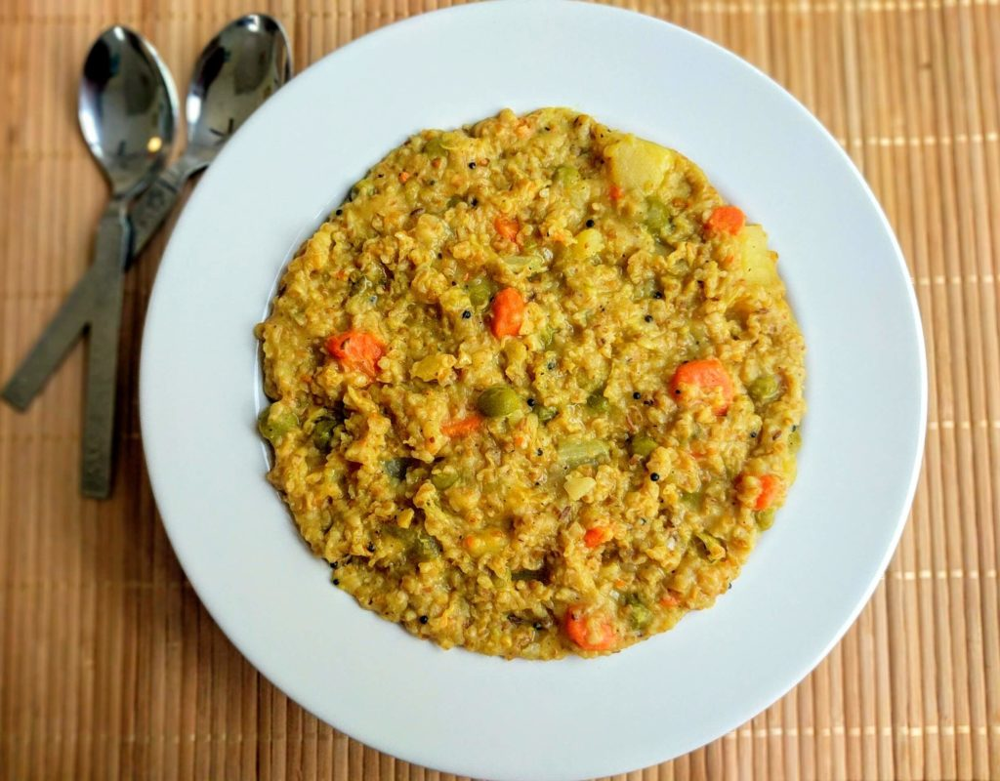

Masala Dalia

Vegetable Dalia is prepared with Dalia / broken wheat. Dalia is also known as Cracked wheat / Broken wheat. It is a traditional Indian Super Food/Grain often used in every Indian household.
It is also known as Bulgur Wheat, Broken wheat, Ghau na Fada, Burghul, or Couscous. It is made by milling the raw wheat grains coarsely, which is then cleaned, husked, and processed to the required size.
Ingredients
- 1 Cup Daliya (Broken Wheat)
- 1/4 Cup Moong Dal (Yellow)
- 1 Small Potato
- 1 Carrot
- 1/2 Louki (Ghiya / Bottle Gourd)
- 1/2 Cup Green Peas (Matar)
- 1 Green Chilli
- 1 Tablespoon Rai (Black Mustard Seeds)
- 1 Teaspoon Cumin Seeds (Jeera)
- 2 Cloves (Laung)
- 1/2 Teaspoon Turmeric Powder (Haldi)
- 1/2 Teaspoon Black Pepper Powder
- 1/2 Teaspoon Saunth Powder (Ginger Powder)
- 1 Teaspoon Salt, or to taste
- 5 Cups Water
- 2 Tablespoons Ghee
Instructions
- Wash the Dalia and soak it in enough water for 30 min.
- Meanwhile, chop the vegetables.
- Heat a pan. Add ghee and oil.
- Add mustard seeds. When they start to crackle add cumin seeds.
- When they splutter add hing. Add dry red chili, bay leaf, green chili, curry leaves, and garlic cloves.
- Saute for a minute. Add onion and pinch of salt.
- Cook till turns light brown.
- Add all vegetables and ¼ tsp of salt.
- Cover & cook till turn soft.
- Add all dry spices and salt. Saute for a minute.
- Add drained dalia. Mix well.
- Saute till turns into light brown.
- Add 2 cup water. Bring to boil.
- Cover & cook on slow flame.
- Stir in between. Cook until water gets absorbed completely.
- You can pressure cook this until 2 whistles.
- Serve hot vegetable dalia with a spoonful of Ghee and curd, papad, pickle of your choice.